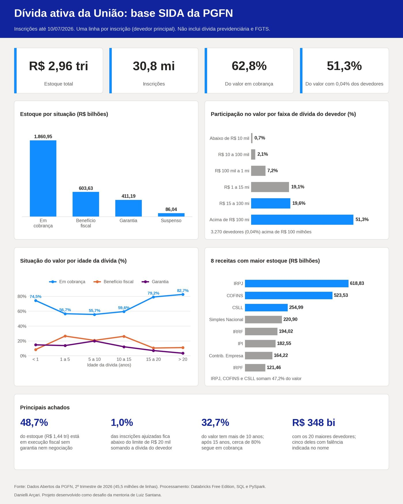

Contexto
A base SIDA da PGFN tem 45,5 milhões de linhas em 6 arquivos que somam cerca de 9 GB. O volume impressiona, mas a pergunta que interessa é outra: desse estoque, o que tem chance real de ser recuperado, e onde a cobrança deveria concentrar esforço?
Escolhi esse tema porque junta as duas coisas que sei fazer. Passei 17 anos no Direito, e entender execução fiscal, garantia e corresponsabilidade tributária foi o que me permitiu ler esses dados sem cair nas armadilhas da base.
Dados
| Camada | Tabela | Conteúdo |
|---|---|---|
| Bronze | bronze_sida | 45.553.971 linhas como vieram da fonte, todas como texto, com arquivo de origem e trimestre |
| Silver | silver_sida | Todas as linhas com tipos corrigidos (valor, data e ajuizamento) |
| Silver | silver_inscricoes | 30.845.336 inscrições, uma por linha, só com o devedor principal |
| Gold | gold_* | Agregados por situação, UF e tipo de pessoa, e idade da dívida |
Fonte: Dados Abertos da PGFN, 2º trimestre de 2026, inscrições até 10/07/2026. O recorte é a dívida ativa geral (SIDA), sem a previdenciária e o FGTS.
Processo
A primeira versão do projeto tinha dois erros que mudavam tudo:
- Valores multiplicados por 100, porque o separador decimal se perdeu na conversão.
- Dívidas contadas mais de uma vez. A base repete cada inscrição para cada corresponsável, sempre com o valor integral. Os corresponsáveis, sozinhos, somam R$ 3,54 trilhões, e somando todas as linhas o estoque passaria de R$ 6,8 trilhões.
Refiz tudo a partir da fonte original:
- Ingestão direta do site da PGFN para um Volume do Databricks, carregando e apagando um CSV por vez para respeitar o limite de armazenamento da versão gratuita.
- Diagnóstico de qualidade antes de qualquer análise: nenhum dos 45,5 milhões de valores falhou na conversão.
- Uma linha por inscrição, só com o devedor principal, e devedores agrupados pela raiz do CNPJ (8 primeiros dígitos).
- Regras de negócio documentadas no notebook: valor consolidado, idade da dívida, limite de ajuizamento da Portaria MF nº 75/2012.

Achados
O que os dados mostram
- A cobrança judicial mira as dívidas grandes: as ajuizadas são cerca de 20% das inscrições e 78% do valor.
- A regra do limite de R$ 20 mil é respeitada. Metade das ajuizadas tem valor individual abaixo do limite, mas só 1,0% continua abaixo quando se soma a dívida do devedor. Testei duas hipóteses antes de concluir, e a soma por devedor explicou quase tudo.
- Dívida velha continua em cobrança: depois dos 15 anos, a parcela em cobrança sobe para cerca de 80%.
- Três tributos concentram o estoque: IRPJ, COFINS e CSLL somam 47,2%. O Simples Nacional tem o maior número de inscrições, mas só 7,5% do valor.
- Os 20 maiores devedores empresariais somam R$ 348,1 bilhões, e cinco deles, com falência indicada no nome, respondem por R$ 68,8 bilhões.
Recomendações
- 01Dois modelos de cobrança. Atuação individualizada para os devedores acima de R$ 15 milhões, que concentram R$ 2,10 trilhões, e cobrança em massa (protesto, transação por adesão) para os 7,3 milhões de devedores abaixo de R$ 100 mil, que somam 2,8% do valor.
- 02Agir cedo. 74,5% do valor inscrito no último ano está em cobrança, sem negociação nem garantia. É a janela com mais chance, antes que o devedor perca patrimônio.
- 03Tratar a dívida antiga como bloco separado. As inscrições com mais de 15 anos somam R$ 524,22 bilhões. Uma triagem separa o valor contábil do valor com perspectiva real de recuperação.
- 04Usar os corresponsáveis. Nas dívidas acima de R$ 15 milhões, mais de um terço das inscrições tem corresponsável, com média de 4,2 a 5,2 pessoas por inscrição.
- 05Acompanhar os grandes devedores falidos pelos processos falimentares, sem esperar recuperação por ações de cobrança comuns.
As recomendações partem só dos dados públicos e não consideram custos operacionais nem a estratégia que a PGFN já adota.
Limitações
- É uma fotografia de um trimestre: não mostra o que entrou, saiu ou foi pago.
- A base não traz a data do ajuizamento; a análise da portaria usa a data de inscrição como aproximação.
- Os valores incluem juros e encargos até 2026, então dívidas antigas aparecem maiores do que eram na origem.
- As medianas usam
PERCENTILE_APPROXe podem variar alguns reais entre execuções.
Próximos passos
- Carregar os trimestres anteriores para medir entrada, saída e envelhecimento do estoque.
- Transformar as conferências manuais em testes automáticos e agendar a carga trimestral com Databricks Jobs.
- Cruzar a raiz do CNPJ com os dados abertos da Receita Federal para identificar empresas baixadas ou falidas.